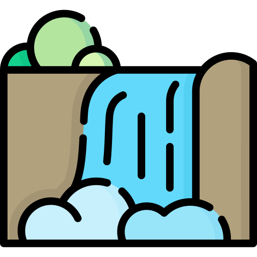

Nuestra Metodologia
Desarrollo Incremental
Usado para:
Division del proyecto total en base a funcionalidades, permitiendo un mejor control del desarrollo de cada una.
Desarollo Clasico (Cascada)
Usado para:
Desarrollo concreto y especializado en cada una de las funciones derivadas del ciclo de vida incremental. En este ciclo se realiza el diseño, codificacion, prueba, integracion, y mantenimiento de cada parte.

Usado para:
Definir metas y/o objetivos generales mediante el uso de sprints segun los lapsos de tiempo que defina el equipo de trabajo.
Seguimiento constante del trabajo individual mediante el uso de las daily meetings, que permiten comunicacion activa y fluida entre los miembros del equipo de desarrollo.